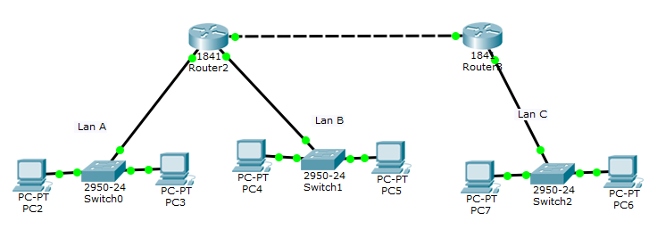
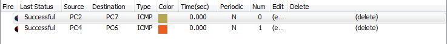

Пучкин Евгений
ИДМ-18-06
Лабораторная работа №1:
"Экосистема разработки программ с открытым кодом"
Задача:
Создание персональной страницы-отчета на github и работа с git
Ход работ:
1) Присоединение к репозиторию ИТ 2) Создание репозитория 3) Создание личной страницы для формирования отчёта
Лабораторная работа №2:
"Разработка простого веб-приложения"
Задача:
Проектирование и разработка индивидуального или коллективного веб-приложения с использованием html,css,js + json,xml
Информация по проекту:
1) Команда - "Животные" 2) Приложение -
Разложение любого положительного целого числа в сумму трех палиндромов
3) Состав команды:
Мочалина М.А.
Рубцов А.А.
Гулид А.К.
Пучкин Е.О.
Лабораторная работа №3:
"Разработка простого веб-приложения"
Задача:
Настройка локальной сети передачи данных: Настройка коммутаторов и маршрутизаторов
Ход выполнения:
Настройка сетей происходит через программу "Cisco Packet Tracer".
Вариант: 11
Количество узлов LAN: 1 - 4 узла 2 - 624 узла 3 - 1654 узла
Общая схема маршрутизаторов:

Проверка отправки/получения сообщений:
